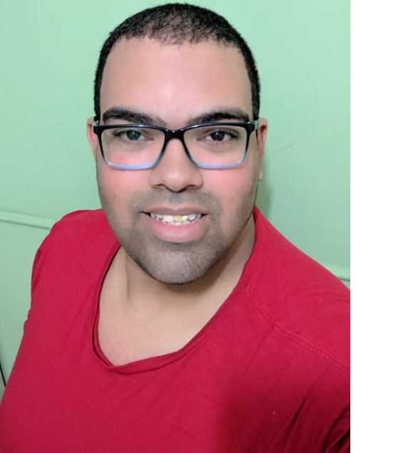

Natanael Neto: Meu irmão e minha referência em programação
Lucas Moraes: Parceiro nos momentos pré-aula, com Discord e Zoom's Testes
Tiago Bovolin: Também parceiro nos momentos pré-aula, com Discord e Zoom's Testes e uma pessoa que me inspira na carreira
Joseane Guedes: Minha primeira aluna, pena ter batido o sino
Márcio Daniel: Criativo, também conheci nos Zoom's Testes e irmão em Cristo
Sílvio Dayube: Colega de formação jurídica, mesma bagagem, mesmos desafios, também conheci em Zoom's Testes
Lucas Ferraz: Em nome de quem, agradeço a todos e todas que fazem a Trybe pela oportunidade que me fora concedida
Eric Massaki: Grande ser humano, com quem tive a honra de dividir uma sala juntamente com o Gustavo Caetano
Erick Marinho: Minha paixão por aviação me faz ter muito orgulho de sua história de vida, em ter sido um dos socorristas do acidente da Gol, com certeza conversaremos mais sobre
Luis Felipe Avila: Co-capitão técnico da dinâmica de Internet, tens futuro brilhante
Cajueiro: Sempre à disposição da turma, não tem tempo ruim para ele, ser humano incrível
Vinicius: Grato pelo auxílio na formatação do sistema Linux, encerramos duas coisas num processo só
Saiba mais 